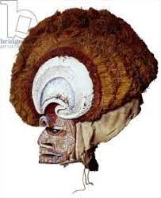

222. Malagan display and mask. New Ireland Province, Papua New Guinea. 20th century CE Wood, pigment, fiber, and Shell.
- Form
- extremely intricate in their carving
- artist are specialists in using negative space
- painted black yellow and red: important colors denoting violence, war, and magic
- Ceremonies
- Malagan ceremonies send the soul of the deceased on the way to the otherworld
- sometimes ceremonies begin months after death, and can last an extended period of time
- Ceremonies free the living of the obligation of serving the dead.
- Content
- Sculptures of the deceased are commissioned; they represent the individual's life force or soul, NOT physical presence
- Mask indicates the relationship of a particular deceased person to a clan, and living members of the family
- Large hair comb reflects the hairstyle of the time, but masks are not physical portraits, only portraits of the soul.